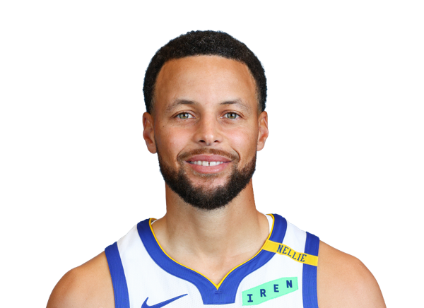

三分線之外，還有下一個發球台
從高爾夫熱情，延伸出給年輕球員的機會。

Curry 對高爾夫的投入，也延伸到 UNDERRATED Golf。計畫希望降低參與門檻，讓更多年輕選手能獲得比賽與發展機會。
UNDERRATED Golf 的官方資訊涵蓋美國與歐洲巡迴賽，以及 Curry Cup。對年輕選手而言，走上球場也關乎資源與機會；對 Curry 而言，另一項熱愛的運動，成為擴大參與、陪伴下一代成長的方式。
EDITOR'S NOTE
本文為原創摘要與整理。事件日期：來源未明確提供／涉及一段期間。原始來源發布日期與本站編輯日期分開記錄，歷史活動不代表目前仍在進行。
回到故事的來源
- UNDERRATED Golf / Eat. Learn. Play.UNDERRATED Golf 官方網站 ↗
- Eat. Learn. Play.Curry 家庭公益與高爾夫專訪 ↗